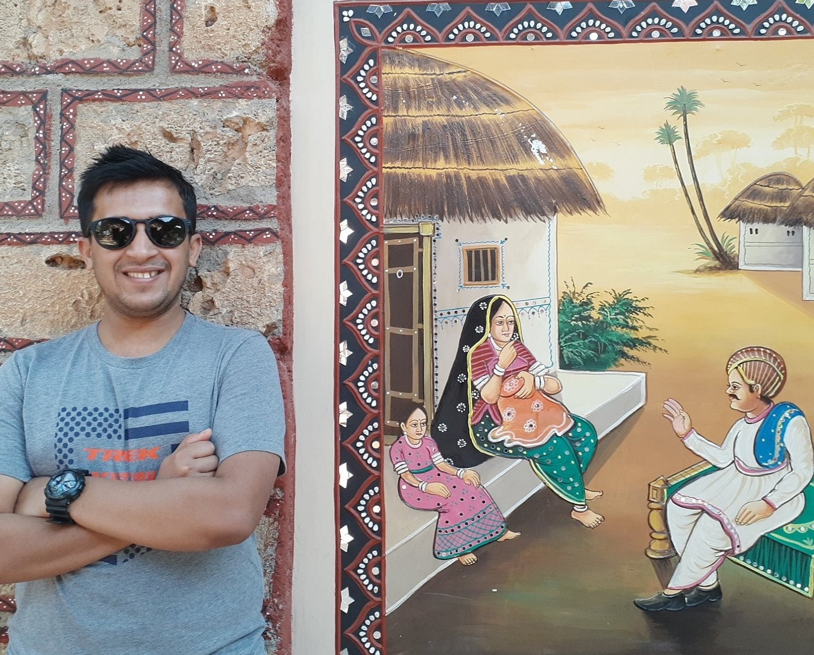

I'm a Graduate student in Applied Statistics at Bowling Green State University, Ohio, USA. This blog is my journey and diary into the world of data science and analytics.
Reach out to me on :
Twitter , Github , LinkedIn , or via Email.
Click here to find my Resume.
Actively seeking full time Data Science oppurtunities. Hire me !!